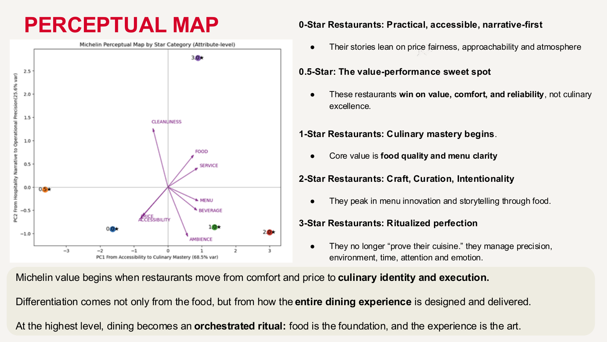
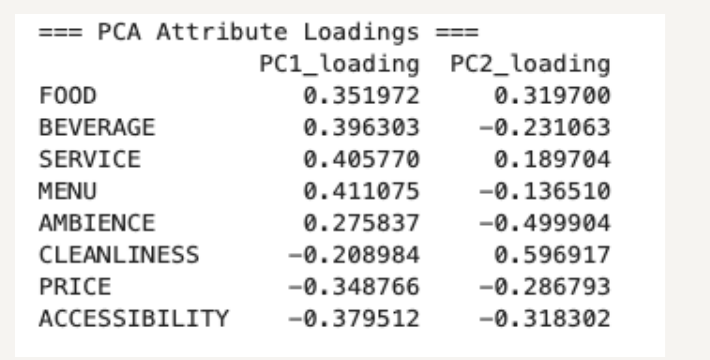

Situation
Unstructured inspector descriptions made it difficult to compare 18,422 restaurants across 19 countries.
Task
Design the taxonomy and extraction pipeline for an interpretable comparison of rating tiers.
Action
Built evidence-only GPT-4.1-mini extraction; pivoted from uninformative sentiment scores to attribute tagging, then used PCA and text-based regression.
Result
The first component explained about 68.5% of variance. Findings distinguished food/service execution and a cleanliness threshold effect. These are statistical associations, not causal effects.



